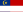
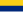

List of Malaysian states by GDP
This is a list of Malaysian states and federal territories sorted by their gross domestic product (GDP).[1][2]
As of 3 November 2022 Malaysian Ringgit (symbol: RM, currency code: MYR) is equivalent to 0.211 United States dollar[3] or 0.213 Euros.[4]
In 2023, Selangor contributed 25.9% of Malaysia's GDP, followed by Kuala Lumpur (15.9%) and Johor (9.5%).[5] GDP per capita also varied widely across the country, with Kuala Lumpur, Labuan, Penang and Sarawak classified as high-income economies as of 2022[update].[6]
Gross Domestic Product by state
[edit]{kind=link}
National GDP is 364,681 US$.
The following table is the list of the GDP of Malaysian states released by the Department of Statistics Malaysia.[7][8]
Data for 2023 estimates (US$ 1 = MYR 4.56 at 2023 average market exchange rate,[9] international $ (I$) using 2023 PPP conversion factor from World Bank (I$ 1 = MYR1.43) [10])
| State or Federal Territory | 2023 GDP (RM Million)[11] |
2023 GDP (millions US$ nominal) |
2023 GDP (millions I$ PPP) |
2022 GDP (RM Million)[12] |
2022 GDP (millions US$ nominal) |
2022 GDP (millions I$ PPP) |
2021 GDP (RM Million)[13] |
2020 GDP (RM Million) |
2019 GDP (RM Million) |
2018 GDP (RM Million) |
2017 GDP (RM Million) |
2016 GDP (RM Million) |
2015 GDP (RM Million) |
2014 GDP (RM Million) |
2013 GDP (RM Million) |
2012 GDP (RM Million) |
2011 GDP (RM Million) |
2010 GDP (RM Million) |
|---|---|---|---|---|---|---|---|---|---|---|---|---|---|---|---|---|---|---|
| Selangor | 450,271 | 98,744 | 314,875 | 421,641 | 95,827 | 243,589 | 343,983 | 326,805 | 345,008 | 323,215 | 302,186 | 281,839 | 268,825 | 226,964 | 212,645 | 200,906 | 187,434 | 177,718 |
| Kuala Lumpur | 277,519 | 60,859 | 194,069 | 262,730 | 59,711 | 151,779 | 219,706 | 217,447 | 233,794 | 220,359 | 206,174 | 191,641 | 180,865 | 152,380 | 140,534 | 131,514 | 122,890 | 113,095 |
| Johor | 148,205 | 31,401 | 120,163 | 142,056 | 47,537 | 89,909 | 131,303 | 128,074 | 134,226 | 130,586 | 123,561 | 116,682 | 110,002 | 93,665 | 87,974 | 84,050 | 78,946 | 74,102 |
| Sarawak | 142,352 | 30,158 | 127,075 | 140,161 | 45,405 | 88,709 | 131,572 | 127,556 | 136,759 | 133,010 | 130,169 | 124,513 | 121,585 | 102,318 | 98,089 | 94,013 | 92,700 | 87,131 |
| Penang | 115,957 | 24,567 | 89,925 | 121,154 | 27,535 | 70,966 | 99,111 | 92,691 | 94,645 | 91,234 | 86,768 | 82,493 | 78,146 | 66,200 | 61,324 | 58,353 | 55,827 | 52,946 |
| Sabah | 111,906 | 24,541 | 78,256 | 122,138 | 27,758 | 77,938 | 78,999 | 77,840 | 85,642 | 85,012 | 83,793 | 77,518 | 73,776 | 66,376 | 63,226 | 61,223 | 59,339 | 58,127 |
| Perak | 94,427 | 20,708 | 66,033 | 93,112 | 21,161 | 50,768 | 76,923 | 74,264 | 75,993 | 73,031 | 69,337 | 65,958 | 63,176 | 54,785 | 52,368 | 49,756 | 46,346 | 43,313 |
| 75,703 | 16,602 | 52,939 | 76,075 | 17,289 | 38,858 | 55,403 | 54,885 | 58,434 | 56,290 | 54,591 | 50,875 | 49,450 | 43,946 | 42,201 | 40,047 | 38,148 | 35,871 | |
| 63,308 | 13,883 | 44,271 | 60,213 | 13,684 | 32,177 | 47,783 | 46,336 | 48,034 | 45,694 | 43,816 | 41,771 | 40,186 | 35,963 | 34,892 | 33,924 | 32,007 | 30,229 | |
| 57,646 | 12,397 | 40,312 | 56,373 | 12,812 | 32,239 | 47,511 | 46,042 | 46,841 | 44,804 | 43,067 | 41,156 | 39,550 | 34,105 | 32,740 | 31,241 | 29,585 | 27,356 | |
|  Melaka | 55,405 | 12,150 | 38,745 | 50,795 | 11,544 | 28,790 | 41,900 | 41,030 | 43,583 | 42,376 | 40,830 | 37,713 | 36,077 | 30,071 | 27,933 | 27,276 | 25,487 | 24,187 |
| Terengganu | 37,625 | 8,251 | 26,311 | 38,221 | 8,686 | 23,613 | 35,238 | 33,994 | 36,001 | 34,838 | 33,979 | 32,133 | 31,124 | 26,866 | 25,326 | 24,292 | 23,509 | 22,769 |
| Kelantan | 31,275 | 6,859 | 21,871 | 30,306 | 6,887 | 17,022 | 25,797 | 25,188 | 25,479 | 24,143 | 23,501 | 22,476 | 21,408 | 19,048 | 18,136 | 17,558 | 16,691 | 15,591 |
|  Perlis | 7,026 | 1,541 | 4,913 | 6,701 | 1,522 | 3,924 | 5,868 | 5,785 | 6,151 | 5,885 | 5,695 | 5,570 | 5,353 | 4,790 | 4,549 | 4,167 | 3,852 | 3,389 |
| 8,314 | 1,823 | 5,814 | 8,285 | 1,882 | 5,034 | 7,650 | 7,613 | 7,623 | 7,245 | 6,790 | 6,412 | 5,999 | 4,806 | 4,574 | 4,426 | 4,214 | 4,105 | |
| 1,822,904 | 399,760 | 1,274,758 | 1,791,358 | 407,127 | 1,133,771 | 1,548,898 | 1,418,491 | 1,512,738 | 1,447,760 | 1,372,310 | 1,249,698 | 1,176,941 | 1,012,506 | 955,080 | 912,261 | 864,920 | 821,434 |
Gross Domestic Product per capita by state
[edit]{kind=link}
National average is 11,281 US$.
The following table is a list of the GDP per capita of Malaysian states released by the Department of Statistics Malaysia. Data for 2023 estimates (US$ at 2023 average market exchange rate,[14] international $ (I$) using 2023 PPP conversion factor from World Bank[15])
| State or Federal Territory | 2023 GDP per capita (RM) |
2023 GDP per capita (US$ nominal) |
2023 GDP per capita (I$ PPP) |
2022 GDP per capita (RM) |
2022 GDP per capita (US$ nominal) |
2022 GDP per capita (I$ PPP) |
2021 GDP per capita (RM) |
2020 GDP per capita (RM) |
2019 GDP per capita (RM) |
2018 GDP per capita (RM) |
2017 GDP per capita (RM) |
2016 GDP per capita (RM) |
2015 GDP per capita (RM) |
2014 GDP per capita (RM) |
2013 GDP per capita (RM) |
2012 GDP per capita (RM) |
2011 GDP per capita (RM) |
2010 GDP per capita (RM) |
|---|---|---|---|---|---|---|---|---|---|---|---|---|---|---|---|---|---|---|
| 131,038 | 28,736 | 91,634 | 127,199 | 28,909 | 80,506 | 111,292 | 121,100 | 129,472 | 121,293 | 111,321 | 101,420 | 94,722 | 90,464 | 82,208 | 77,073 | 70,675 | 64,693 | |
| Labuan | 83,596 | 18,332 | 58,459 | 81,652 | 18,557 | 51,678 | 81,345 | 76,898 | 77,798 | 74,337 | 65,949 | 61,833 | 58,577 | 55,566 | 53,576 | 49,157 | 44,044 | 38,445 |
| 72,586 | 15,918 | 50,759 | 69,684 | 15,837 | 44,104 | 59,685 | 55,774 | 55,243 | 52,397 | 49,873 | 47,322 | 44,847 | 42,130 | 38,490 | 37,053 | 35,527 | 33,597 | |
| 72,411 | 15,880 | 50,637 | 80,857 | 18,377 | 51,175 | 65,971 | 55,931 | 53,358 | 52,301 | 49,327 | 44,333 | 44,012 | 44,596 | 41,766 | 41,493 | 40,636 | 35,034 | |
| Selangor | 62,492 | 13,704 | 43,701 | 59,908 | 13,615 | 37,916 | 51,930 | 48,607 | 54,995 | 51,528 | 48,091 | 44,616 | 42,611 | 40,536 | 38,071 | 36,799 | 34,478 | 32,300 |
| 53,922 | 11,825 | 37,708 | 50,407 | 11,456 | 31,903 | 44,610 | 42,861 | 49,172 | 47,960 | 46,015 | 41,363 | 39,853 | 38,656 | 35,699 | 34,965 | 32,421 | 29,366 | |
| Negeri Sembilan | 51,709 | 11,340 | 36,160 | 49,804 | 11,319 | 31,522 | 44,495 | 41,254 | 45,373 | 43,047 | 41,615 | 38,559 | 36,699 | 35,865 | 34,118 | 33,761 | 32,136 | 29,363 |
| Pahang | 46,084 | 10,106 | 32,227 | 47,177 | 10,722 | 29,859 | 41,313 | 38,010 | 36,560 | 35,577 | 38,952 | 36,244 | 30,343 | 29,341 | 27,856 | 27,413 | 27,069 | 23,883 |
| 41,902 | 9,189 | 29,302 | 41,058 | 9,331 | 25,986 | 36,474 | 33,896 | 37,342 | 36,394 | 34,362 | 31,952 | 29,539 | 28,089 | 26,308 | 25,442 | 24,350 | 22,035 | |
| Perak | 37,170 | 8,151 | 25,993 | 36,924 | 8,391 | 23,370 | 34,338 | 31,626 | 31,719 | 30,303 | 29,226 | 27,246 | 25,418 | 21,132 | 22,445 | 21,711 | 20,370 | 18,207 |
| Terengganu | 31,111 | 6,823 | 21,756 | 32,199 | 7,318 | 20,379 | 30,901 | 29,426 | 30,933 | 30,216 | 29,347 | 27,268 | 26,529 | 26,397 | 24,449 | 23,935 | 23,282 | 21,573 |
| 31,147 | 6,830 | 21,781 | 36,020 | 8,186 | 22,797 | 29,960 | 24,652 | 25,326 | 25,861 | 23,979 | 21,081 | 19,734 | 19,723 | 18,680 | 19,487 | 19,648 | 17,831 | |
| 26,353 | 5,779 | 18,429 | 25,967 | 5,902 | 16,435 | 23,575 | 22,693 | 22,412 | 21,410 | 20,327 | 19,152 | 18,249 | 17,329 | 16,616 | 16,088 | 15,563 | 14,034 | |
| Perlis | 24,004 | 5,264 | 16,786 | 23,126 | 5,256 | 14,637 | 21,508 | 21,099 | 25,656 | 24,442 | 23,372 | 22,479 | 21,394 | 20,999 | 20,196 | 19,537 | 18,299 | 17,410 |
| Kelantan | 16,836 | 3,692 | 11,773 | 16,567 | 3,765 | 10,485 | 15,584 | 14,951 | 14,341 | 13,668 | 13,593 | 12,812 | 12,075 | 11,748 | 11,284 | 11,217 | 10,894 | 9,806 |
| 54,612 | 11,976 | 38,190 | 54,863 | 12,469 | 34,723 | 47,439 | 43,475 | 46,450 | 44,682 | 42,228 | 38,887 | 37,104 | 36,031 | 33,714 | 32,913 | 31,372 | 28,733 |
See also
[edit]References
[edit]- ^ "Table 30: GDP by State, 2010-2016 at Current Prices - RM Million" (PDF) (in Malay and English). Department of Statistics, Malaysia. p. 17/32. Retrieved 22 February 2018.
- ^ "Table 2.6.2: Gross Domestic Product by State at Constant Prices (2010 = 100), 2010 - 2016, Malaysia" (PDF) (in Malay and English). Economic Planning Unit, Prime Minister's Department of Malaysia. p. 1/2. Archived from the original (PDF) on 21 April 2017. Retrieved 22 February 2018.
- ^ "XE: MYR / USD Currency Chart. Malaysian Ringgit to US Dollar Rates". www.xe.com. Retrieved 4 January 2021.
- ^ "XE: MYR / EUR Currency Chart. Malaysian Ringgit to Euro Rates". www.xe.com. Retrieved 4 January 2021.
- ^ Lam, Seng Fatt (2 July 2024). "Selangor records 25.9% contribution to 2023 national GDP — DOSM". The Edge. Retrieved 23 July 2024.
- ^ "Sarawak now a high-income state, says World Bank lead economist". Malaysian Investment Development Authority. 6 July 2023. Retrieved 23 July 2024.
- ^ "Department of Statistics Malaysia Official Portal". www.dosm.gov.my. Retrieved 30 September 2020.
- ^ "Department of Statistics Malaysia Official Portal". www.dosm.gov.my. Retrieved 30 October 2021.
- ^ "Official exchange rate (LCU per US$, period average)". data.worldbank.org. Retrieved 12 July 2023.
- ^ "World Bank Open Data: PPP conversion factor, GDP (LCU per international $)". data.worldbank.org. Retrieved 12 July 2023.
- ^ "Department of Statistics Malaysia Official Portal". www.dosm.gov.my. Retrieved 2 July 2024.
- ^ "Department of Statistics Malaysia Official Portal". www.dosm.gov.my. Retrieved 30 June 2023.
- ^ "Department of Statistics Malaysia Official Portal". www.dosm.gov.my. Retrieved 8 November 2022.
- ^ "Official exchange rate (LCU per US$, period average)". data.worldbank.org. Retrieved 12 July 2023.
- ^ "World Bank Open Data: PPP conversion factor, GDP (LCU per international $)". data.worldbank.org. Retrieved 12 July 2023.
- https://www.dosm.gov.my/v1/index.php?r=column/cthemeByCat&cat=102&bul_id=TExzYmVmRC83S1hBMEUrUDVzczdLUT09&menu_id=TE5CRUZCblh4ZTZMODZIbmk2aWRRQT09
- https://www.johor.gov.my/kerajaan/bajet-johor/tahun-2019#tab-id-3 Johor 2018 estimate grow 5%-5.2%
| History | |
|---|---|
| Currency | |
| Banking and Finance | |
| Government agencies | |
| Corridors and Regions |
|
| Economic blueprint | |
| Economic co-operation | |
| Policies and Programs | |
| Agreements | |
| Industries | |
| Other topics | |